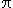

The Calculus of Rainbows
Understanding Refraction
- Setting the Stage
- Part1: Minimum Deviation
- Part2: Explaining Colors
- Part3: Secondary Rainbows and Brightness
- Pot of Gold
Setting the Stage
Originally an assignment for my Calculus I course (differential calculus) during my first year at the University of Kentucky, this example problem is a glimpse of the relationships of refracted light through molecules of water. As light enters the water droplet, it is refracted when it enters since the shape is spherical. The colors are a result of different refracting wavelengths for each color. When white (all colors) of light enters the droplet it is split into other colors based on what wavelength the color is refracted at. This is why rainbows have the same pattern of colors, and ultimately the reason they form and are seen as an arc of colors forming a sequence (red, orange, yellow, green, blue, indigo, violet). To read more about rainbows, I suggest reading the scientific explanation on WikiPedia.
The problem is done in depth in the following solutions and examples. It was taken from the textbook the course utilized and I have scanned a copy of the problem and provided it for viewing. I highly suggest following the problem as you read the rest of the provided example work. The assignment only spans two pages and includes a few useful diagrams, take the time to view rainbows1 and rainbows2 (both PDF files). Please also take note that this is a transposition of the original problem from a paper I did years ago. There are, without a doubt, mistakes in the formatting and perhaps in the mathematics, but I hope they are minimal (or nonexistent). I will gladly accept feedback.
Part1: Minimum Deviation
| Differentiate the equation for the angle of deviation and solve for zero. | |
| Use Snell's law and differentiate, then plug in (d / d) = (1 / 2). | |
| Solve for cos, then plug in values and replace in terms of . | |
| Eliminate and arrive at sin. Simpify fully for , then use arcsin to get answer. |
The following is quoted directly from the text: The significance of the minimum deviation is that when = 59.4° we have D'() = 0, so (D / ) = 0. This means that many rays with = 59.4° become deviated by approximately the same amount.
Part2: Explaining Colors
|
If k 1.3318 it represents red values. If k 1.3435 it represents violet values. Use Snell's law, we know sin from part1. The values for red are done first. | |
| Plug into deviation function, use Snell's law to get . | |
|
Make final calculations, use degrees (  = 180°). We get 42.3°, so the dispersed light is confirmed as red. | |
| Repeat the same process as above, but for = 1.3435 to confirm violet dispersed light. We get 40.6° which does confirm. |
For red light, the refractive index is k 1.3318, for violet light the refractive index is k 1.3435. Using the calculations from part one we can confirm that the rainbow angle for red dispersed light is around 42.3°, while violet light is dispersed at around 40.6°.
Part3: Secondary Rainbows and Brightness
| Use the given deviation. Differentiate and solve for zero, getting (d / d). | |
| Differentiate Snell's rule and plug (d / d) = (1 / 3) in. Use trigonometric identity. Manipulate Snell's rule for use. | |
| Use trigonometric identity again, then solve for cos. The deviation has a minimum value. | |
| Find , use Snell's law to find . | |
| Use deviation, then subtract from 180°. No concern for negative angle. |
The third part of the problem deals with secondary rainbows that appear above the brighter primary rainbow. The text gives us k = (4 / 3) and asks us to prove that the rainbow angle for the secondary rainbow would be about 51°.
Pot of Gold
Folklore would suggest that if you could find the end of a rainbow (presumably where it disappears into the earth) you would also find a pot of gold. We all know that this is obviously not true, but the reason why is hidden in the problems above. Rainbows can only be viewed at certain angles. If you were to "approach" a rainbow you would get to the point where the angle you were viewing it at from was not in the rainbow angle range. Illusions from a distance could seemingly make an object look as if it was at the end of a rainbow, but since rainbows are a product of the refraction of light, they are only optical illusions.
The assignment is not fully completed in these examples. No minimum deviations are calculated in charts one through three. chart four is omitted entirely. In regards to chart four, it is asking for proof that the colors in the secondary rainbow apear opposite in order relative to the primary rainbow. This is a result of the way the secondary rainbow is formed. See the diagram on the left side of the provided rainbows2 page for more clarity.